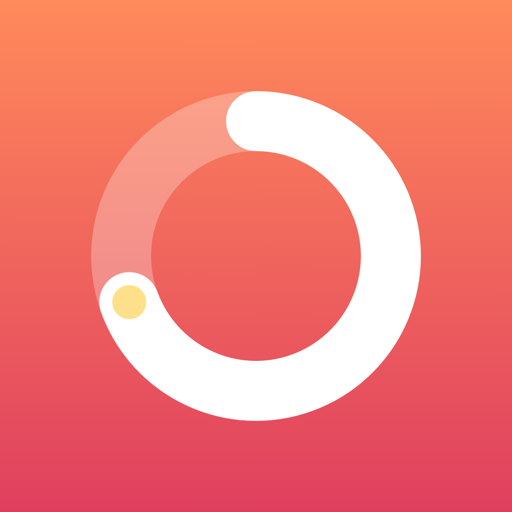
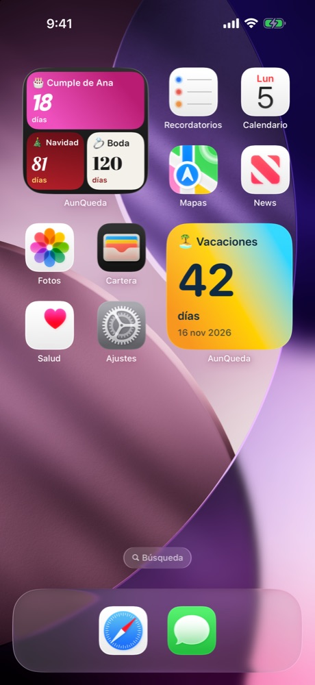
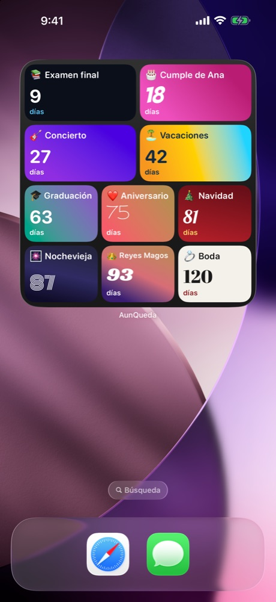
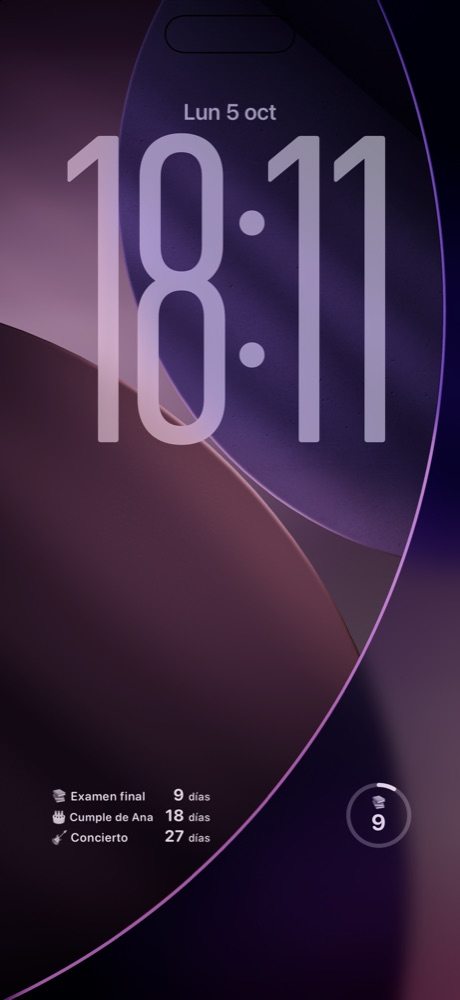
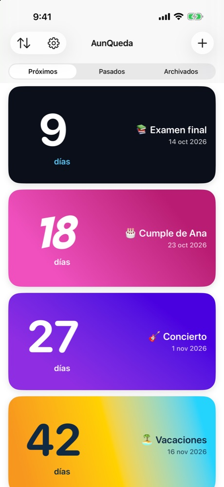
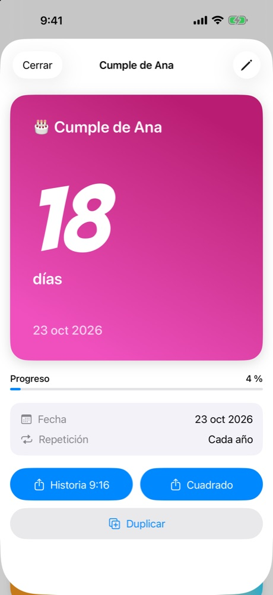
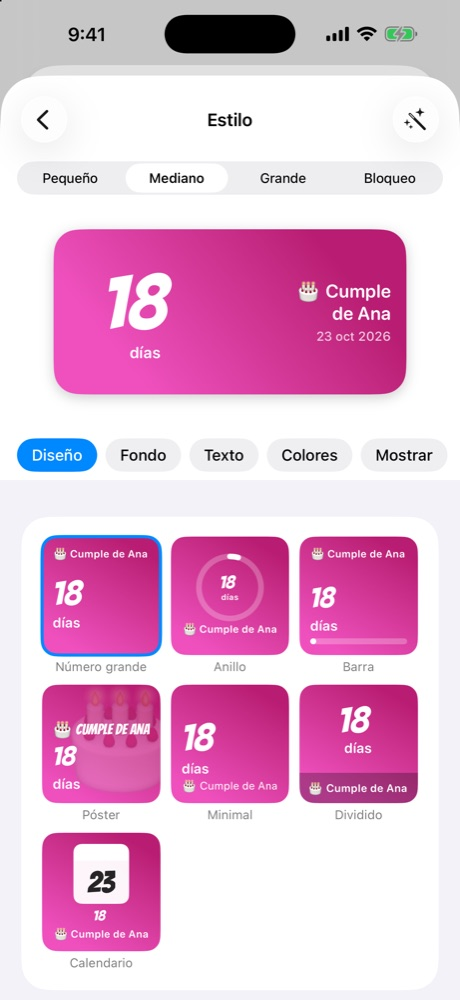
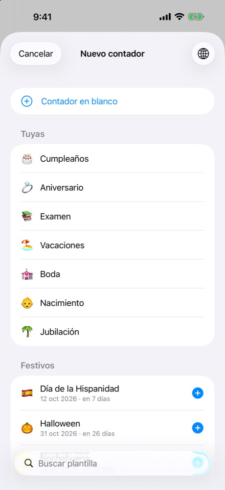
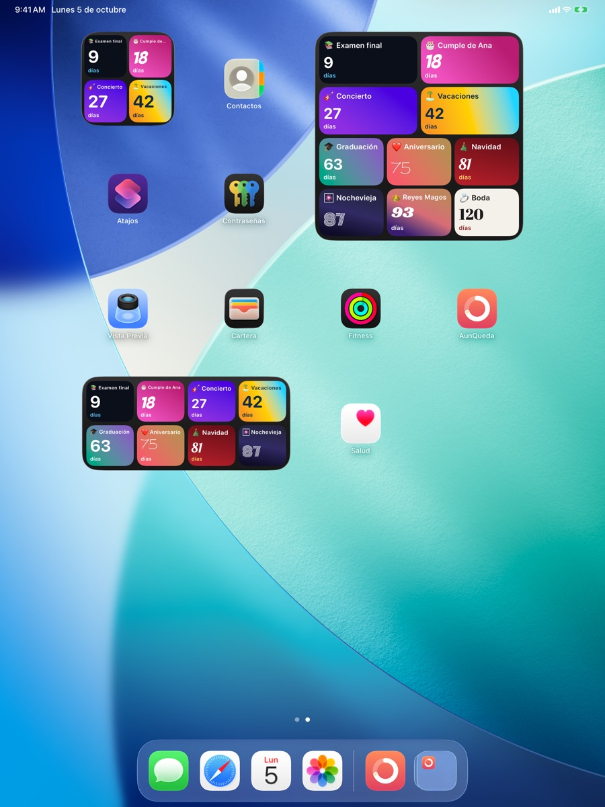
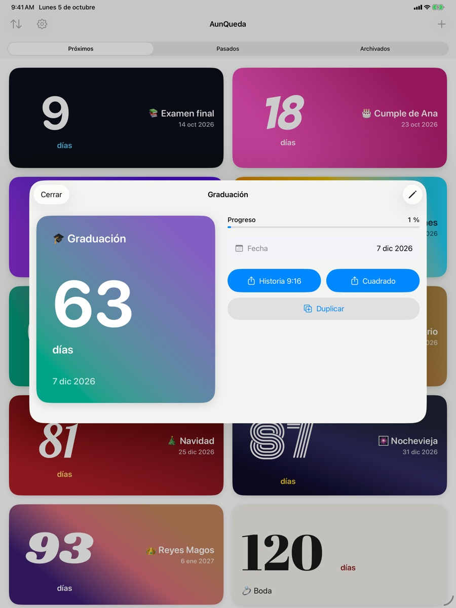

AunQueda
Cuentas atrás con widgets que son tuyos.
Próximamente en iPhone y iPadCuenta los días que faltan para lo que te importa: vacaciones, cumpleaños, Reyes, una boda o un examen. AunQueda te lo pone en la pantalla de inicio y en la de bloqueo, con el aspecto que tú elijas.







Lo que hace AunQueda
- Widgets de inicio y bloqueoPequeño, mediano y grande, con uno o varios contadores. También en la pantalla de bloqueo y en StandBy.
- Totalmente personalizables44 estilos, siete diseños, fuentes, colores, fondos, patrones y tus propias fotos, con zoom y encuadre.
- Plantillas por paísNavidad, Reyes, Día de la Madre… la fecha ya está puesta, tú solo eliges.
- CategoríasAgrupa y filtra tus cuentas atrás. Haz un widget solo con los eventos de familia y otro con los de trabajo.
- Avisos y confetiRecordatorios antes del gran día y una pequeña fiesta cuando llega.
- CompárteloSaca tu cuenta atrás como imagen para tus historias o tus chats.
- Sincronizado con iCloudTus cuentas atrás, igual en tu iPhone y en tu iPad.
- Emojis y tipografíasPon el emoji que quieras, del tamaño que quieras, y elige la letra que mejor le va.
Pensada para el iPhone y el iPad
En el iPad, las cuentas atrás se ordenan en una rejilla y el editor de estilo aprovecha toda la pantalla: vista previa a un lado y controles al otro.


Preguntas frecuentes
¿Es de pago?
No. AunQueda es gratuita y no tiene anuncios ni compras dentro de la app.
¿Cómo añado un widget?
Mantén pulsada la pantalla de inicio, toca «+», busca AunQueda y elige el tamaño. Toca el widget para elegir qué contadores muestra, o déjalo vacío para ver los próximos. Si das una categoría, mostrará solo los de esa categoría.
¿Se sincroniza entre mis dispositivos?
Sí, mediante tu iCloud. Si lo tienes desactivado, la app sigue funcionando en local.
¿Qué datos recoge?
Ninguno. No hay cuentas, analítica ni publicidad. Lee la política de privacidad.